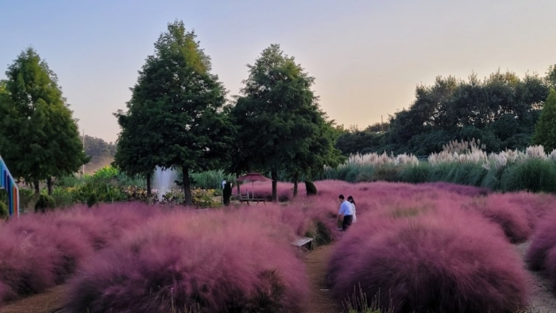
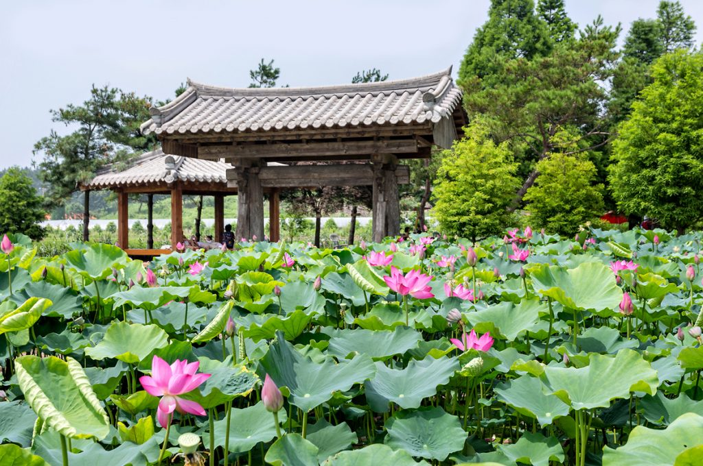
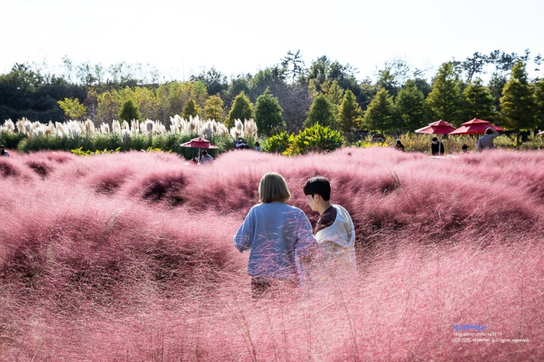
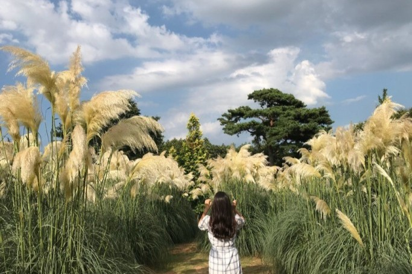

홈
책 소개
디스플레이
수직 방향 메뉴
인라인+블록

태안 청산수목원
1. 청산수목원 소개
인생샷 명소 청산수목원은 연중무휴로 운영되며, 봄부터 가을까지 홍매화, 수선화, 밥풀꽃, 튤립, 홍가시, 꽃팡포, 수국, 연꽃, 팜파스, 핑크뮬리,축제가 열립니다. 아울러 미로정원과 알파카동물농장을 관람 하실 수 있습니다.
2. 청산수목원 포토스팟

연원
다양한 종류의 연과 수생식물이 있는 곳입니다.
이 연국의 길을 걸으며 사랑하는 이들의
길상만복을 축원해 보십시오.

핑크뮬리존
매해 가을마다 분홍빛 핑크뮬리가
청산수목원을 덮으며 다양한 식물들과 함께
아름다운 풍경을 감상할 수 있습니다.

팜파스원
8월 하순, 팜파스그래스가 풍성하게 피어나면서
가을의 정취를 흠뻑 휘감아 볼 수 있는
특별한 경험을 얻을 수 있습니다.
3. 요금안내
구분
(시즌•테마별)
12~3월
홍가시•창포•연꽃 시즌
팜파스•핑크뮬리 시즌
개인
단체
개인
단체
개인
단체
일반
9,000
8,000
12,000
11,000
13,000
12,000
청소년
(초•중•고)
7,000
6,000
9,000
8,000
10,000
9,000
유아
(3~7세)
6,000
5,000
7,000
6,000
8,000
7,000